Аполлонія / Статті / Нові матеріали для відновлення стертих зубів
Практичний досвід · журнал «ДентАрт» 2022 №2
Нові матеріали для відновлення естетики і функції стертих зубів
New dental materials to restore worn teeth – function and esthetics
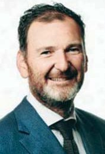
Стефан Кубі / Stefan Koubi
Марсель, Франція
Резюме
Протягом останніх десяти років для потреб стоматології з’явилися різні нові матеріали, наприклад, зміцнені керамікою композити й інфільтрована полімером кераміка, що дозволяють щодня підвищувати якість реставрацій, які ми створюємо. Це стосується і лікування пацієнтів зі стертістю зубних рядів. За своїми фізичними властивостями композитні CAD/CAM блоки посідають проміжне місце між керамічними і гібридними матеріалами. З композитного блоку (композит LuxaCam) можна виготовити реставрацію товщиною 0,5 мм, і за зношуванням цей матеріал дуже схожий на емаль, що є дуже важливим, враховуючи характеристики зубів-антагоністів і парафункцію. У цій статті аналізується клінічний випадок відновлення зубних рядів, схильних до стирання, з роз’ясненням процесу лікування і критеріїв вибору матеріалів.
Ключові слова
ерозія і стирання зубів, лікування пацієнтів зі стертістю зубів, вестибулярні й оклюзійні вініри, композит LuxaCam.
Abstract
In the last decade, excellent innovative materials of different kinds, such as ceramic reinforced composites and resin infiltrated ceramics, have become available for our restorations to improve everyday. This also applies to the treatment of patients with worn dentition. In terms of their physical properties, composite CAD/CAM blocks occupy an intermediate position between ceramic and hybrid materials. A composite block (LuxaCam composite) can be used to make a 0.5 mm thick restoration, and this material is very similar to enamel in terms of wear, which is very important, given the characteristics of antagonistic teeth and parafunction. In this article a case of worn dentition is presented with its workflow and materials explained.
Key words
erosion and abrasion, treatment of patients with tooth wear, vestibular and occlusal veneers, LuxaCam composite.
Лікування пацієнтів зі стертістю зубних рядів передбачає відновлення й відтворення втрачених зубних тканин матеріалами, що мають механічні властивості, схожі з властивостями зубів.
Ми розглянемо цей випадок лікування пацієнта, зуби якого схильні до стирання, проаналізуємо процес лікування і принципи підбору потрібних для цього матеріалів.
Клінічний випадок
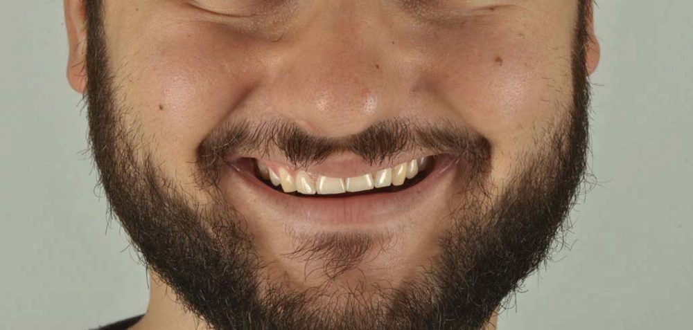
Чоловік звернувся до нас зі скаргою на підвищену чутливість під час жування, зокрема в бокових зубах. Під час зовнішнього огляду спостерігається викривлення лінії усмішки, пов’язане з ерозією зубів, зміщенням осі зубів і скороченням їхньої довжини.
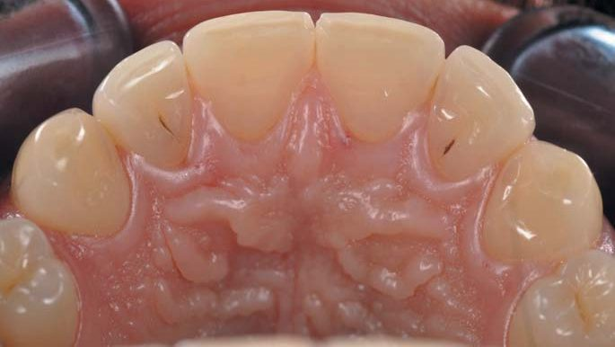
Внутрішньоротовий огляд: на піднебінній поверхні деяких зубів емаль повністю відсутня через постійне вживання газованих напоїв і наявність парафункціональних звичок.
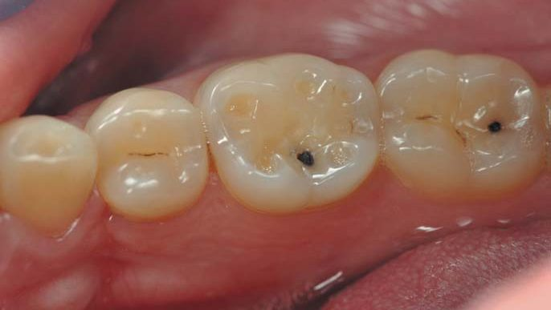
Анатомія оклюзійної поверхні змінилася під впливом ерозії та стирання. Емаль повністю відсутня на оклюзійних поверхнях зубів, за винятком зовнішньої, периферійної зони.
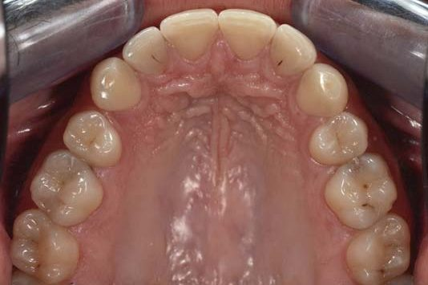
Змін зазнали як верхній, так і нижній зубні ряди: у верхньому зубному ряду зменшена висота фронтальних зубів, трохи сплющена й завалена лінія усмішки, тому в план лікування будуть включені тільки 8 фронтальних зубів; у нижньому зубному ряду найчутливішими були еродовані моляри, тимчасом як структура 6 фронтальних нижніх зубів практично не змінилася; отже, в план лікування будуть включені тільки жувальні зуби.
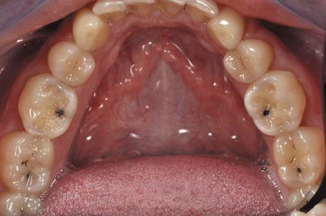
Під час вивчення оклюзійних поверхонь зубів верхньої дуги помітно карієс на зубах 16 і 26. Для його усунення ми плануємо використовувати вкладки, що повторюють початкову анатомію. Піднебінними вінірами плануємо відновити зуби з 13 по 23, а вестибулярними вінірами – з 14 по 24.
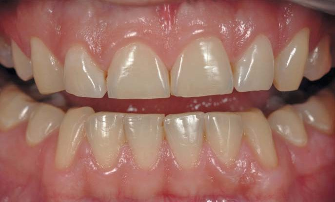
Для нижнього ряду з метою відновлення втраченої анатомічної форми зубів з 35 по 37 і з 45 по 47 будуть виготовлені оклюзійні вініри. Також буде усунуто карієс на чотирьох молярах. Водночас основний акцент буде зроблено на усунення різкого переходу від фронтальної зони до жувальної шляхом усунення перепаду висоти між іклами й премолярами.
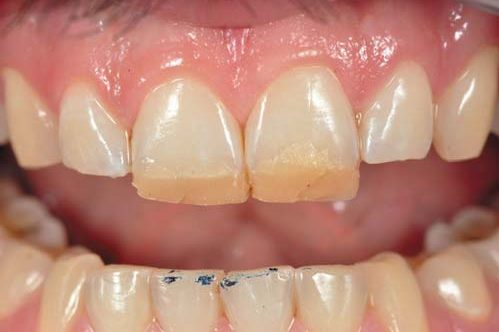
У відповідності зі встановленими для таких випадків рекомендаціями, для попередньої перевірки перед виготовленням wax-up і реєстратів робиться пробна реставрація верхніх різців шляхом нанесення композиту у вільному стилі, щоб імітувати новий ріжучий край і перевірити його функціональність безпосередньо в ротовій порожнині пацієнта. Це робиться для того, щоб після зняття попереднього альгінатного відбитка у техніка були окреслені рамки, потрібні для створення wax-up.
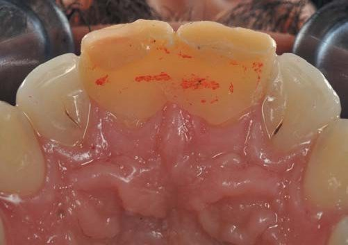
Водночас піднебінна поверхня верхніх центральних різців покривається композитом для збільшення висоти прикусу й імітації початкового стану зубів до того моменту, коли емаль почала стиратися. Для реєстрації нової висоти прикусу щелепи повинні бути встановлені в центральному співвідношенні. Інакше кажучи, ми моделюємо джіг (Lucia JIG) за допомогою загальнодоступної прямої реставраційної техніки.
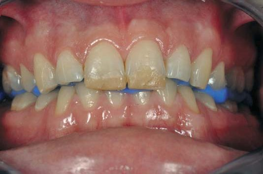
Після перевірки нового прикусу простір, який з’явився між верхніми і нижніми зубами, заповнюється дуже гарним композитом хімічного затвердіння (LuxaBite, DMG), розробленим для простої і точної реєстрації прикусу.
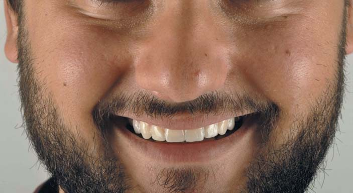
Після передачі всіх даних зубному технікові з урахуванням клінічних рекомендацій створюється wax-up, який потім переноситься назад у ротову порожнину на обидва зубні ряди за допомогою повного mock-up з ін’єктованого біс-акрилового композиту (Luxatemp Star, A1, DMG). Це робиться для перевірки естетики й оклюзії.
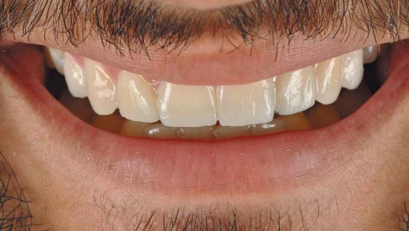
Завдяки попередньому аналізу естетичності у відповідності з новим дизайном усмішки змінюються осі й співвідношення зубів.
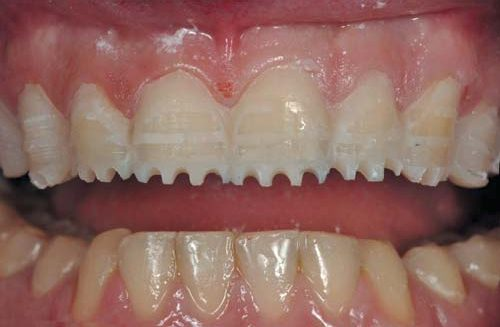
Щоб інвазивність обробки твердих тканин зубів під вестибулярні й оклюзійні вініри була мінімальною, ми вдалися до техніки керованого препарування крізь mock-up, яку розробив G. Gurel (техніка комплексного mock-up).
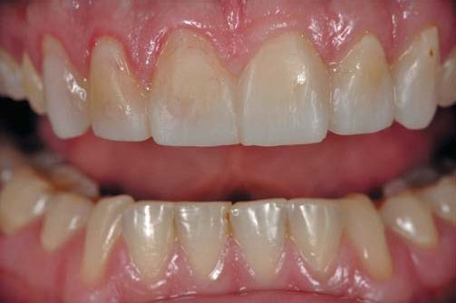
Провізорні реставрації виготовлено за допомогою того ж силіконового ключа і з того ж матеріалу, що й mock-up. Як бачите, коронкові частини зубів 11, 12 і 13 були трохи подовжені за допомогою гінгівектомії, щоб зеніти були на одному рівні.
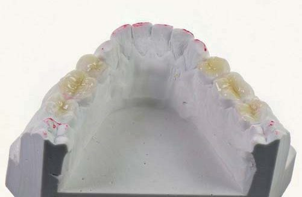
Виготовлені в лабораторії оклюзійні вініри жувальних зубів.
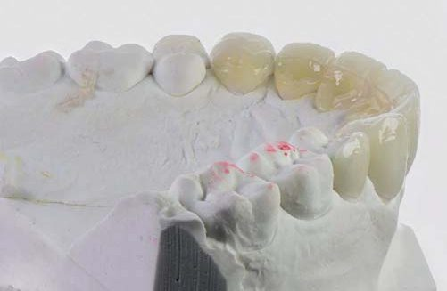
Вигляд фронтальних зубів на моделі верхньої щелепи з виготовленими сендвіч-реставраціями (F. Vailati) – піднебінними й вестибулярними вінірами. Функціональні вініри (піднебінні й оклюзійні) були виготовлені з композитних блоків нового покоління. Вестибулярні вініри виготовлені з дисилікату літію (emax LT).
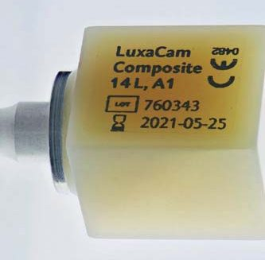
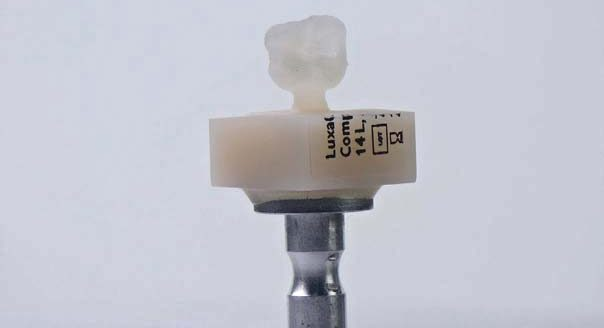
Композитний CAD/CAM-блок. За своїми фізичними властивостями цей матеріал посідає проміжне місце між керамічними й гібридними матеріалами. Основних причин, через які ми обрали саме цей композитний блок (композит LuxaCam, DMG), було дві: з нього можна виготовити реставрацію товщиною 0,5 мм; якщо говорити про зношування, матеріал дуже схожий на емаль, і це важливий фактор, якщо враховувати характеристики зубів-антагоністів і парафункціональні звички пацієнта.
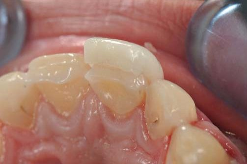
Вигляд сендвіч-реставрацій фронтальних зубів під час примірки (Vitique, DMG).
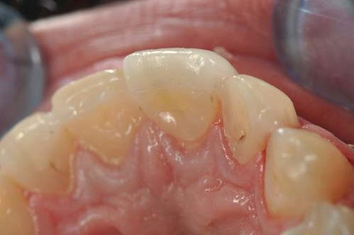
Вигляд після адгезивної процедури, проведеної одночасно для фіксації обох вінірів.
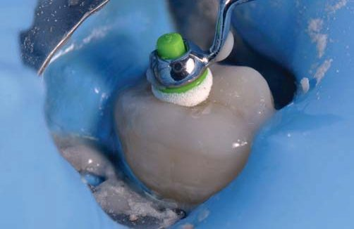
Для виконання адгезивних процедур з метою встановлення оклюзійних вінірів зуби ізолюються один від одного за допомогою рабердаму.
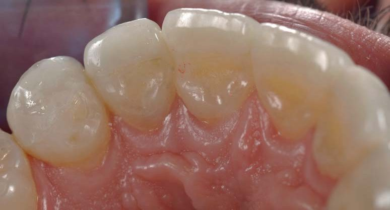
Вигляд піднебінних вінірів, виготовлених з композиту LuxaCam (DMG). Зверніть увагу, наскільки зливається матеріал із навколишніми тканинами.
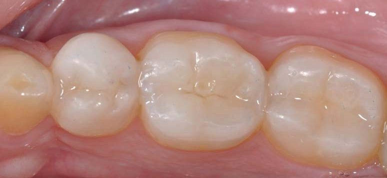
Оклюзійні вініри на зубах 35 – 37. Лінії з’єднання не помітні.
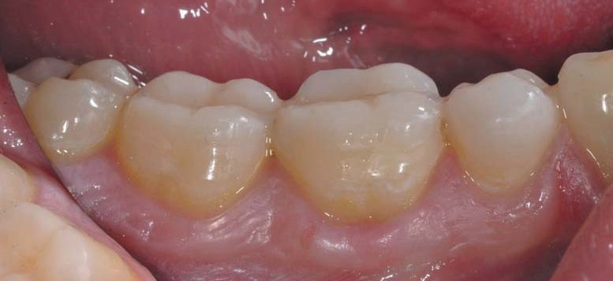
Оклюзійні вініри встановлені на існуючу анатомічну поверхню.
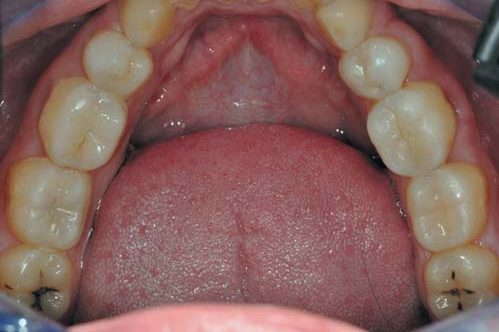
Вигляд оклюзійної поверхні реставрацій нижнього ряду.
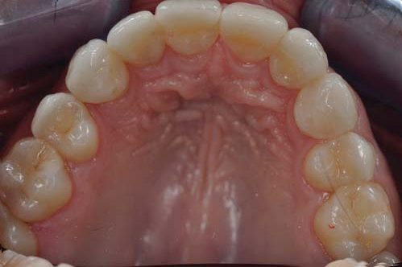
Вигляд оклюзійної поверхні реставрацій верхнього ряду.
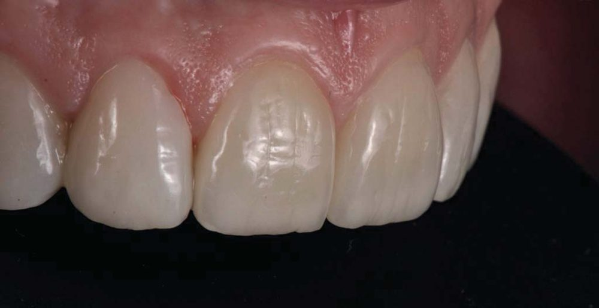
Кінцевий вигляд інтегрованих вінірів. Особлива подяка сертифікованому технікові Hilal Kuday (м. Бодрум) за цей шедевр і прекрасну роботу.
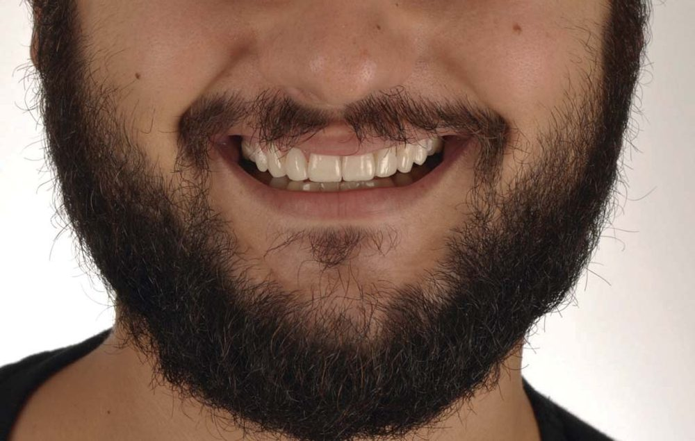
Нова усмішка зі скоригованим напрямком осей і співвідношенням зубів.
Висновки
За останні десять років на ринку з’явилася велика кількість «розумних» та інноваційних матеріалів, зокрема для роботи з CAD/CAM. Звичайно, дуже важливо ретельно вивчити характеристики цих матеріалів: дізнатися тип матеріалу, його фізичні властивості й обмеження за товщиною. Тоді стоматолог і технік повинні розробити злагоджений план лікування й обговорити всі клінічні й технічні параметри. І останній, але не менш важливий пункт, – слід вивчити механічні умови, тобто характеристики зубів-антагоністів, і хімічні умови, тобто кислотність, щоб краще спрогнозувати віддалений результат відновлення.
Література
Magne P., Stanley K., Schlichting L. H. Modeling of ultrathin occlusal veneers. Dent Mater. 2012 Jul; 28(7): 777-82.
Abduo J. Safety of increasing vertical dimension of occlusion: a systematic review. Quintessence Int. 2012 May; 43 (5): 369-80.
Abduo J., Lyons K. Clinical considerations for increasing occlusal vertical dimension: a review. Aust Dent J. 2012 Mar; 57 (1): 2-10.
Margossian P., Laborde G., Koubi S., Couderc G., Mariani P. Use of the Ditramax System to Communicate Aesthetic Specifications to the Laboratory. Eur journal of esth dent 2011; 6 (2).
Vailati F., Belser U. Classification and treatment of anterior maxillary dentition affected by dental erosion: the ACE classification. Int J Periodontics Restorative Dent. 2010; 30 (6): 559-71.
Koubi S., Gurel G., Margossian P., Massihi R., Tassery H. A simplified approach for restoration of worn dentition using the full mock-up concept: clinical case report. Int J Periodontics Restorative Dent. 2018; 38 (2): 189-197.
Практичні курси естетичної реставрації зубів у Навчальному центрі «Аполлонія»